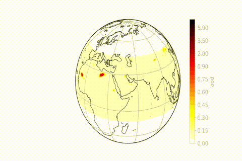
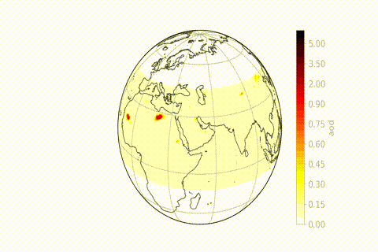

Modelling Activities
Over the years I have used and contributed to developments in different community models including Meso-NH, GEOS-Chem and mostly the ICTP RegCM5 regional climate model for processes relevant to climate, biogeochemistry and atmospheric chemistry.
Some of these developments concerned for instance:
- The chemistry and aerosol schemes (including dust cycle)
- The interface to the RRTM/McICA radiation scheme
- The slab-ocean parameterization
- The biogeochemistry interface to the CLM4.5 surface scheme
- Model diagnostics useful to assess perturbation and feedbacks

 
